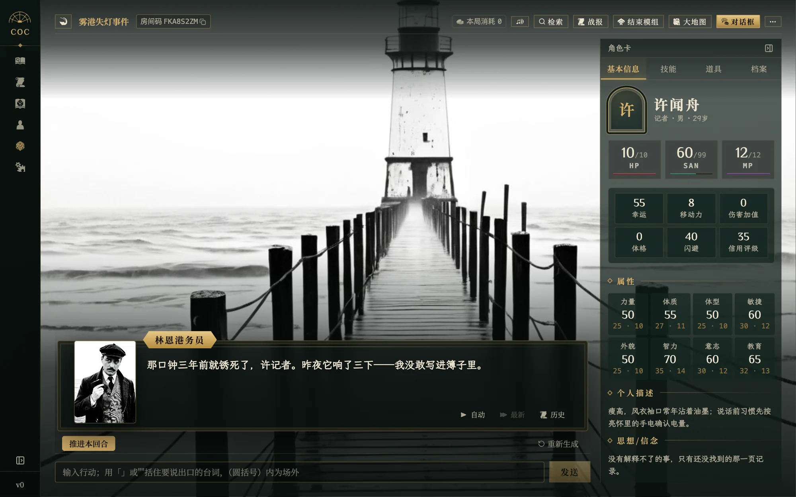
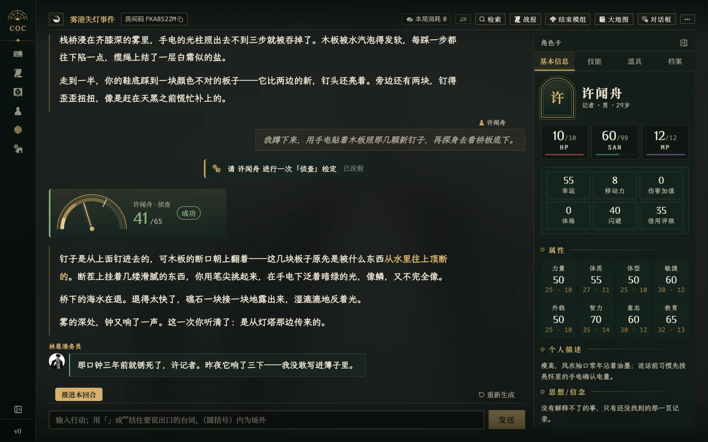
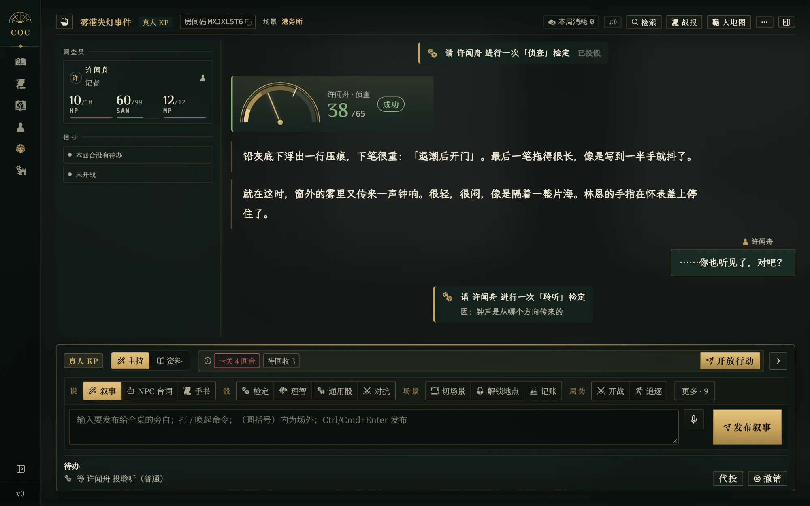
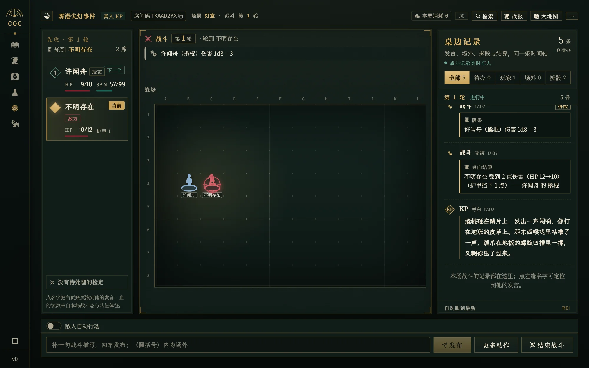
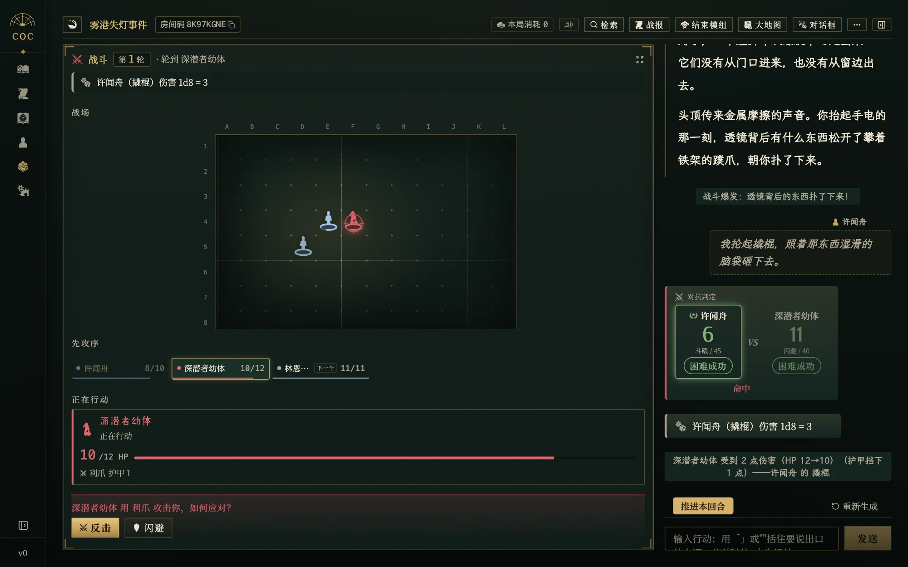
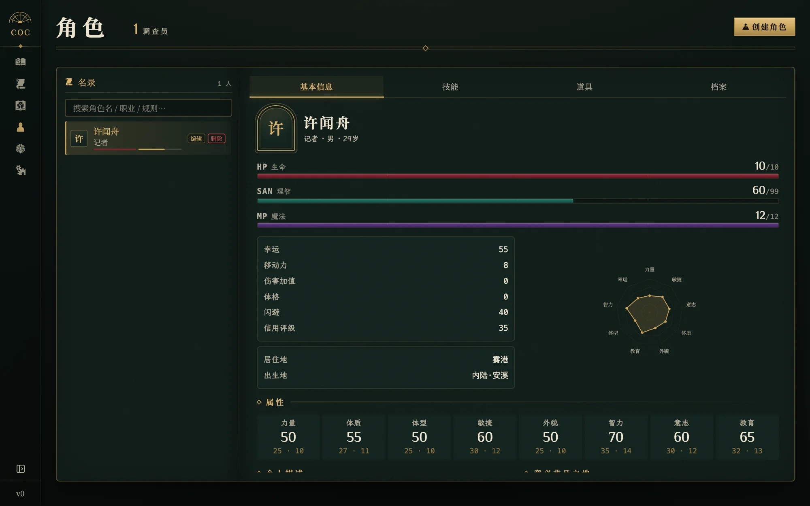
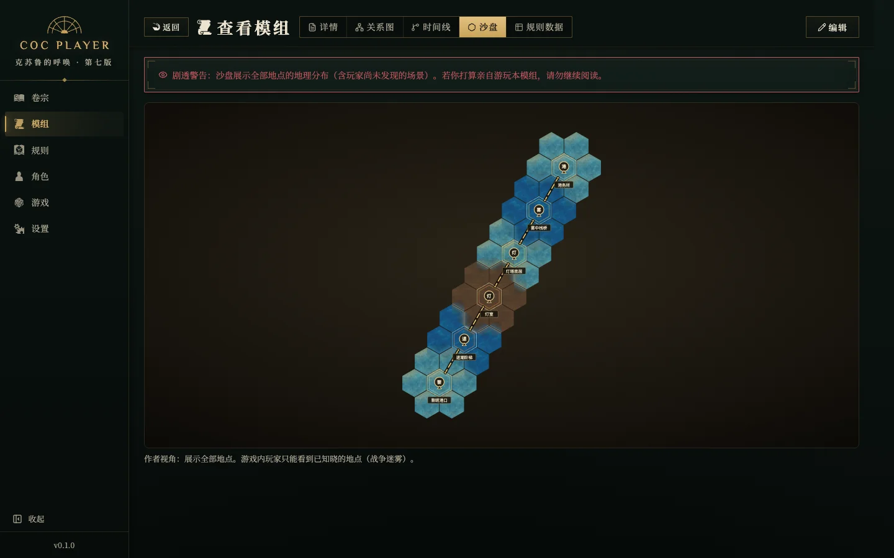
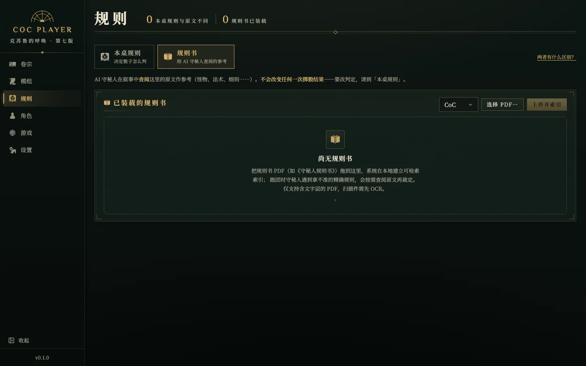
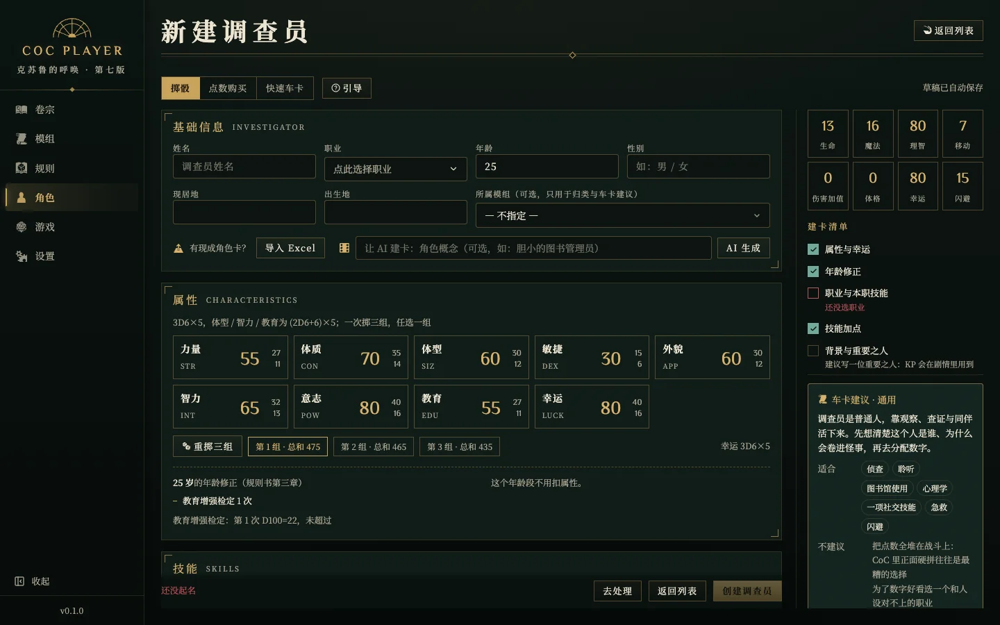
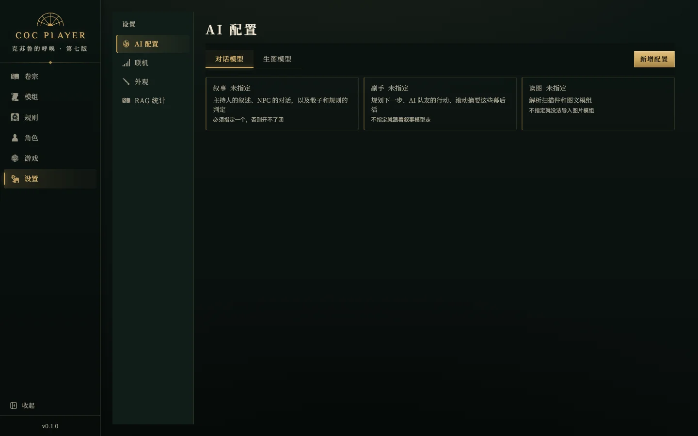

Call of Cthulhu · 7th Edition
CoC Player
一张随时开得了的跑团桌
AI 当守秘人（KP），顺带演所有 NPC，一个人也开得了团。叫上朋友也行，坐不满的席位给 AI 队友。想自己带团，就换你当守秘人，AI 在旁边递草稿。模组、角色卡和游戏记录都留在你自己的电脑上。
装好还不能直接玩：得自己有一个 AI 模型接口（OpenAI 兼容或 Anthropic 协议，Gemini 走它的 OpenAI 兼容接口），在「设置 → AI 配置」里填好、测通。本项目不提供模型，也不经手费用。

原创示例短团《雾港失灯事件》的一幕，对话框模式。第一次跑团的人可以从首页「体验新手团」直接进来。
Three ways to sit
谁坐守秘人那把椅子，你来定
建房时定一次。席位坐不满没关系，空位交给 AI 队友，他们会自己行动、自己掷骰。
一个人开团
AI 当守秘人、演所有 NPC，队友也由 AI 扮。深夜想跑一场，不用约人。
叫上朋友
房主建房发房间码，朋友进大厅认领席位。只有房主需要配模型，其他人接上就能玩。
你来当守秘人
AI 退到副手位：拟旁白草稿、给裁定建议、翻模组和规则书。发不发、怎么改你说了算。
At the table
两种读法，一键切换
对话框模式：场景图清晰铺满整个画面，文字在底部一段段打出来，点一下翻一页，也能自动播放。检定和掷骰浮在对话框上方，往回看点「历史」。
聊天流：消息一条条往下排，场景图在流里出现一次，之后糊成背景色调。角色卡常驻右侧，HP、SAN、技能随手可查。

- 骰子是程序掷的，屏幕上的 3D 骰子会滚到算好的那个数上，检定结果用黄铜表盘显示成败
- 发言框里打 @ 就能点名队友、已知地点和自己的技能，NPC 记得你跟他们说过的话
- 场景换了，配乐也跟着换。守秘人只挑氛围，曲子从曲库里配，也可以放自己的曲子
The keeper's desk
换你当守秘人，桌上有一张值班台
普通场景：左侧常驻全队的生命、理智与待办，中间是对局本身，底下一条写作台：旁白、NPC 台词、检定、切场景、发手书都从这里发给全桌。
战斗轮：左边先攻梯与双方体征，中间战场，右边「桌边记录」把发言、掷骰与结算排成一条时间线。敌人的回合由你出手，也可以打开「敌人自动行动」交给 AI。玩家还没认出来的敌人，桌上只显示「不明存在」。


- 卡住时让 AI 拟一段旁白或给条裁定建议，采不采用你说了算
- 模组原文和规则书就地检索，场景、手书、配乐按名字挑，不用记编号
- 暗骰只有你看得见；你占的是守秘人席，不占玩家席，也不掷自己的骰
- 开战、追逐都有专门的台面：选参战方、推进轮次、结算伤害与脱身
Dice, steel and sanity
战斗按规则算，角色卡一眼看全
战斗轮：先攻、命中、闪避、反击、伤害加值、贯穿、重伤与濒死都由规则引擎结算。战场上是微缩棋子，对抗双方的骰值并排摆出来；被攻击时直接问你反击还是闪避。
角色卡：HP、SAN、MP 一眼看清，八项属性下标出困难与极难门槛，派生值旁边是属性雷达图；技能、道具、档案各占一页。对局里同一张卡收在右栏，跟着结算实时变化。


What it does
能做什么
目前规则引擎只做了克苏鲁的呼唤第七版。下面这些都是已经能跑起来的功能。
AI 主持与 NPC
AI 描述场景、扮演所有 NPC、决定什么时候该掷骰。文字边生成边出现；局跑长了自动写剧情摘要，免得模型忘了前面的事。
骰子不交给模型猜
点数是程序算的，不是模型编的。检定、理智、战斗、追逐都走规则引擎，AI 只决定「这里要不要检定、难度多少」。
本桌规则可以改
大成功阈值、奖惩骰上限、幸运能不能花、建卡上限……每条村规都能调，数据表也能改，改好的整套规则可以导出发给别人。
模组导入与 AI 解析
文本、PDF、Word、图片都能传。AI 把本子拆成场景、NPC、线索和时间线，地点画成六边形沙盘，玩家只看得见已知的那部分。
车卡与角色管理
七版六步车卡向导：112 个职业、技能加点、背景与随身物品；有现成的卡就导 Excel，懒得动手就让 AI 捏一张。
规则书按需检索
把规则书 PDF 拖进来，它在本机建索引。守秘人碰到拿不准的规则先翻原文再裁定，建索引的模型也跑在本机。
场景配图与配乐
接上生图模型，场景和 NPC 会有配图（可选）。配乐按氛围自动换，内置曲目都附署名，也能放自己的曲库。
手机上也能坐下
界面适配了手机屏幕：底部导航、紧凑的角色卡与操作区。同一网络里的朋友用手机浏览器就能进房。
把本子交给 AI，拆成能跑的结构
导入的模组拆成场景、NPC、线索和时间线，地点之间怎么走画成一张六边形沙盘。开局后玩家只看得见自己已经知道的那部分。
- 详情 / 关系图 / 时间线 / 沙盘 四种视图
- 含 NPC 秘密与真相的视图有剧透警告
- 守秘人是上帝视角，玩家侧带迷雾

这一桌的规矩，写下来给守秘人看
规则拆成一个个组件：参数、数据表、钩子各管一摊。改动只对用这套规则的房间生效，官方规则就是一份默认预设。
- 改参数的项直接影响骰子结算
- 「桌面约定」是自由文本，只影响怎么演
- 规则书 PDF 在本地建索引，纯扫描件不行，得能选中文字

六步车卡，或者让 AI 替你捏一个
按七版流程走完基本信息、属性、职业、技能、背景与随身物品；中途可以先存着，下次接着填。
- 112 个职业、52 件装备、106 件武器
- 年龄档修正、教育增强、派生值自动结算
- 选定模组后右栏常驻这个本子的车卡建议

Play together
和朋友一起玩
房主的电脑就是主机。没有账号，也没有服务器，存档和角色卡都留在那台机器上； AI 只从房主那端调用，所以只有房主需要配模型。
同一个网络
房主在「设置 → 联机」打开「允许局域网加入」，其他人填主机地址和房间码就能进，电脑和手机浏览器都行。这个开关默认关，打开后要重启应用。
隔着网络
房主开「内置直连」发一条邀请码，对方粘进「加入房间」就行，不用另装联网工具，也不必做端口转发。双方都得用桌面版。
坐不满就补 AI
空着的席位交给 AI 队友。每个队友有自己的性格和记忆，会自己行动、自己掷骰，不必等人凑齐。
Before you download
下载前先看这四件事
装上之后还有两件事得你自己做：接一个模型，准备一个本子。另外两条是安全上的提醒。有一条接受不了，就先别下。
要自备 AI 模型接口
OpenAI 兼容或 Anthropic 协议都行（Gemini 走它的 OpenAI 兼容接口），模型、接口地址、上下文窗口自己填。密钥只存在本机的 ai_settings.json 里；调用模型的钱你直接付给服务商，跟本项目没关系。
安装包没有做代码签名和公证
第一次打开会被系统拦下。macOS 在应用上右键 → 打开再确认一次；Windows 在 SmartScreen 弹窗里点「更多信息」→「仍要运行」。不放心就照仓库文档自己从源码构建。
只适用于本机和可信网络
装好之后它只听本机。要让朋友进来，房主得去「设置 → 联机」手动打开再重启。它没有账号，也不加密传输，别放到公网上，也别做端口转发。
规则书和模组要你自己准备
安装包里只带了一个项目自己写的示例短团。规则书 PDF、模组、角色卡都得自己导入，有没有权用也是你自己的事，详见内容与素材声明。
Get started
三步开跑
从下载到第一次掷骰，大约十分钟。
装上并首次打开
macOS 右键 → 打开；Windows 在 SmartScreen 里选「仍要运行」。数据写在系统的应用数据目录，卸载前都在。
接一个模型
「设置 → AI 配置」新增一个配置，填接口地址、密钥和模型名，点「测试」，通了再启用。生图模型可选。
开第一场团
回首页点「体验新手团」跑完一个小短团；或者进「开始游戏」用自己的模组和角色建房，选好谁当守秘人，把房间码发给朋友。

AI 配置面板。对话模型负责叙述、NPC 与裁定；生图模型是可选的，用来给场景和角色配图。
Where it stops
能力边界，先说清楚
下面是这一版做不到、或者还不稳的地方，下载之前先看一眼。
Under the hood
源码、架构与许可
前端 React + TypeScript，后端 FastAPI + SQLite，桌面壳是 Tauri。规则引擎是一套可插拔的组件，AI 调用走统一的 Provider 抽象。
许可证与内容边界
项目代码采用 Apache License 2.0。许可只管代码，不包括规则书、商业模组、你上传的内容、字体、模型权重这些第三方素材，范围见内容与素材声明。导进来的东西版权归谁还归谁，有没有权用是你自己的事；应用帮你解析、索引、生成，不会因此改变它的归属。